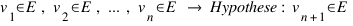
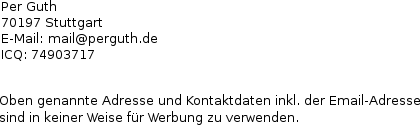

„Woran glauben Sie denn?“
Sicher wurde Ihnen auch schon diese Frage gestellt. Und in den meisten Fällen folgte dann wohl ein Hinweis auf das „einzig wahre Wissen“. Ein Wissen, dass Sie bisher nur noch nicht als solches erkannt hätten, das aber ganz wichtig für Sie wäre, vorausgesetzt, Sie wollen nicht etwa ewige Qualen erleiden.
Wie verhält sich ein wissenschaftlich orientierter Mensch in einem solchen Fall? Er informiert sich, bildet sich eine Meinung und wird so zum Agnostiker.
Doch ist er damit nicht am eigentlichen Kern der Frage vorbei gegangen? Was fällt denn alles in den Bereich des Glaubens? Ist der wissenschaftlich orientierte Mensch nicht vielleicht doch, immer noch und ohne es zu wissen, Anhänger einer subtilen Form von Religion?
Realität?
«Who is the Master who makes the grass green?» - A Zen Koan (in: Robert Anton Wilson: Natural Law or Don't Put a Rubber on Your Willy, Breakout Productions, 1999, S. 59)
Sehe ich das gleiche Grün wie Sie? Mehr noch: sehen wir überhaupt Gras oder nur etwas, dass uns als solches erscheint?
Vielleicht verhält es sich ja wie in Platons Höhlengleichnis: wir sind an einen Stein gefesselt, sodass wir immer nur eine bestimmte Wand anschauen können. An diese Wand werden allerlei Schatten geworfen. Die Schatten werden von den Dingen erzeugt, die hinter uns durch die Höhle getragen werden. Wir sehen also nur Schatten und alsbald halten wir die Schatten für die realen Dinge, für die Dinge an sich.
Prognosen I
Eine Aussage über die Zukunft mache ich in Form einer enumerativen („aufzählenden“) Induktion:

Sprich: Wenn das erste Versuchsergebnis bis zum n-ten Versuchsergebnis meinen Erwartungen entspricht, dann wird auch das nächste, das n+1-te Versuchsergebnis ebenfalls meinen Erwartungen entsprechen.
Prognosen II
Uhrwerk-Analogie
Wenn man annimmt, dass im Hintergrund alles nach logisch erfassbaren
Gesetzmäßigkeiten funktioniert, kann man sich die Welt als eine große
Anhäufung von ineinander greifenden Zahnrädern vorstellen. Mit unseren
Theorien und Experimenten versuchen wir zu bestimmen, wie die einzelnen
Zahnräder funktionieren.
Wir haben schon gute und einleuchtende Theorien über die Funktionsweise
vieler dieser Zahnräder, aber wie sollten wir ausschließen können, dass
irgendwo ein verstecktes Zahnrad sitzt, das plötzlich die Funktionalität
aller anderen Zahnräder beeinflusst oder gar einen Austauschmechanismus
in Gang setzt?
Das Schalter-Display-Gleichnis
Stellen wir uns einen freien Raum vor. Es gibt nur einen Schalter (Aktion) und ein Display (Reaktion). Wir drücken den Schalter und stellen fest, dass das Display aufleuchtet. Wir drücken erneut und wieder leuchtet das Display auf.
Wie sicher können wir in diesem Moment sein, dass das Display beim nächsten Drücken des Schalters erneut aufleuchtet?
Wir drücken einige tausend mal und stets tritt das gleiche Ereignis ein.
Wie sicher können wir uns nun sein?
Wir treffen in diesem Raum andere Leute, die berichten, dass es schon immer so war, ihr ganzes Leben lang. Wir finden Bücher, die bestätigen, dass es seit Jahrtausenden so gewesen ist.
Wie sicher können wir uns nun sein?
Wir beginnen also, zu erforschen, wie der Schalter das Display dazu bringt, aufzuleuchten. Wir machen erneut Versuche, aber nun messen wir mit Instrumenten, was im Moment des Drückens genau geschieht. Es stellt sich in den folgenden Versuchen heraus, dass wohl eine Art Energie vom Schalter zum Display fließt. Dieser Energiefluss lässt sich, so scheint es, durch eine Formel darstellen. Aufgrund der Formel machen wir dann Aussagen darüber, wieviel Energie fließt, je nachdem, wie stark man den Schalter drückt. In allen weiteren Versuchen, die wir anschließend machen, erweist sich die Formel als richtig.
Wie sicher können wir uns nun sein?
Prognosen III
Das Problem ist also, dass es keinen Beweis dafür gibt, dass ein vorhergesagtes Ereignis eintreten wird außer dem Ereignis selbst. Man spricht daher auch vom informationserweiternden Charakter der Induktion, denn die Information, dass das nächste Versuchsergebnis wieder der Erwartung entspricht, wird durch den Beobachter in den Schluss „hineingelegt“.
Die Annahme, dass die Welt sich gleichförmig (uniform) genug entwickelt, so dass man eine sich bewahrheitende Prognose erstellen kann, nennt man Uniformitätsprinzip. Die Problematik, Aussagen über die Zukunft nicht absichern zu können, das Induktionsproblem.
Induktion und Wahrscheinlichkeit
Aufgrund des informationserweiternden Charakters der Induktion ist es also nicht auszuschließen, dass die Erde von einem auf den anderen Moment ein viereckiger Klotz wird oder dass Amerika plötzlich mitsamt seinen Bewohnern auf dem Mond liegt.
Jetzt wird mancher einwenden wollen, dass es doch wahrscheinlicher sei, dass Amerika da bleibt, wo es war. Doch auch Wahrscheinlichkeitsaussagen setzen voraus, dass die Verhältnismäßigkeiten und Abläufe hinter allem uniform bleiben. Es handelt sich bei ihnen ebenfalls um eine Form der enumerative Induktion:
Wenn die erste Studie bis zur n-ten Studie zeigt, dass X Prozent der untersuchten Objekte, der untersuchten Ereignisse Eigenschaft Y besitzen, dann wird auch die nächste, die n+1-te Studie feststellen, dass X Prozent der untersuchten Objekte, der untersuchten Ereignisse Eigenschaft Y besitzen.
Ich kann also nicht mit Wahrscheinlichkeit jedoch aber, unter Aufgabe meines Objektivitäts-Anspruchs, mit Evidenz argumentieren: „Es wäre nicht mit meiner Erfahrung vereinbar (= es wäre mir nicht evident), dass Amerika plötzlich auf dem Mond liegen könnte.“
Argumentationen
Gibt es objektive Argumentationen? Nehmen wir exemplarisch die Argumentation, warum man Kindern nicht zuviel Zucker geben soll. Ich würde, weil ich dieser Meinung bin, argumentieren, dass Zucker sich schlecht auf die Gesundheit auswirkt. Die Gegenseite könnte nun einfach Fragen: „Warum ist das schlecht?“ Ich würde entgegnen: „Weil die Kinder dann krank werden.“ Die Gegenseite könnte weiter bei ihrer Frage, warum dies schlecht sei, bleiben. Ich würde entgegnen: „Weil sie dann früher sterben.“
Das Problem zeichnet sich spätestens hier ab. Die Gegenseite könnte wieder die Frage „Warum ist das schlecht?“ stellen und ich hätte nur die Möglichkeit diese „Warum …?“-„Weil …!“-Kette weiterzuführen oder zu erwidern: „Weil ich das als schlecht definiere!“
1. Ich folge der endlosen Warum-Weil-Kette.
2. Ich ziehe einen Zirkelschluss.
3. Ich stelle ein Dogma auf.
Normen
Man kann jetzt zwar einwenden, dass es doch Anschauungen gibt, die jeder teilt, doch wie sollte man den Beweis einer solchen Verallgemeinerung antreten? Es wäre wie wenn wir beweisen wollten, dass alle Schwäne weiß sind.
Aber was ist mit sehr grundlegenden Intuitionen? Man weiß einfach, dass bestimmte Handlungen richtig und andere falsch sind.
Würde man ein solches Evidenz-Argument als Beweis akzeptieren, würde man die Begriffe „subjektiv“ und „objektiv“ gleichsetzen. Dies würde dann pointiert soviel heißen wie „Alles was mir als richtig erscheint, ist es auch!“
Jede Argumentation ist also, objektiv gesehen, gleich haltbar. Würde ich zum Beispiel behaupten, dass wir, weil wir in diese Welt hineingeboren wurden, uns nehmen dürfen, was wir zum Überleben brauchen, würde ich einen logischen Fehlschluss, den sogenannten naturalistischen Fehlschluss, begehen.
Verständnis
Kommunikation setzt voraus, dass sowohl der Sender als auch der Empfänger einer Nachricht wissen, was mit den einzelnen Wörtern der Nachricht gemeint ist. Um also sicher sein zu können, dass beide das Gleiche unter der Nachricht verstehen, müssten sich beide auf eine gemeinsame, vollständige Definition aller Wörter, aus denen die Nachricht zusammengesetzt ist, einigen.
Wenn ich nun aber versuche, ein beliebiges Wort vollständig zu definieren, stoße ich auf ein ähnliches Problem wie wenn ich versuche, schlüssig für etwas zu argumentieren, denn „jede Definition muß definierende Begriffe benutzen; und so können wir es nie vermeiden, letzten Endes mit undefinierten Begriffen zu arbeiten.“1) Und dieses Problem ergibt sich unabhängig davon, ob ich explizit (X ist Y), implizit (X ist etwas, dass die Eigenschaft Y hat), operational (X kann für den Zweck Y verwendet werden) oder deskriptiv (X ist Y mit Eigenschaft Z) zu definieren versuche. Ich würde vom „Hundertsten ins Tausendste“ kommen - kurzum, ich würde in einer endlosen Definitionskette landen.
Modell-Agnostizismus
Da ich nicht der Illusion erliege, dass es nur ein Modell gibt, mit dem man die Welt beschreiben kann, bin ich mir im Klaren darüber, dass das Modell, mit dem ich eine Sache beschreibe, nicht das einzig mögliche für diesen Zweck ist - es ist vielleicht aber das am besten passendste, das ich kenne. Die Vorstellung von einem wahren Modell, dem Dogma, wird abgelöst durch die Vorstellung von verschiedenen, für mich unterschiedlich wichtigen Modellen, den Katmen.
So ist zum Beispiel der Empirismus in Verbindung mit dem Uniformitätsprinzip (beispielsweise in Form des hypothetischen Realismus) für mich ein wesentlich wichtigeres Katma als das Katma, welches besagt, dass vielleicht alles ein „Schatten“ ist. Jedes Katma hat seine Zeit und in diesem Text konzentrieren wir uns eben auf jene Katmen, die die „Alltags-Katmen“ aushebeln.
Eine Weltsicht mit folgenden Grundannahmen:
1. Es gibt mindestens eine vom Menschen unabhängige Realität.
2. Diese Realität hat eine Struktur, sodass zeitliche Wechselwirkungen und Kausalitäten existieren.
3. Diese Struktur ist für den Menschen zumindest teilweise erkennbar. (Vgl. Wikipedia)
"Das kann doch nicht alles Zufall sein!"
Sicher wurde Ihnen dieses Argument auch schon einmal entgegen gebracht. Und sicher war Ihnen und Ihrem Gesprächspartner klar, welche Bedeutung die Antwort auf dieses Argument in Bezug auf die Frage nach unserer Erkenntnisfähigkeit hat. Denn wenn alles zufällig wäre, dann gäbe es auch nichts zu erkennen.
Wie verhält sich ein wissenschaftlich orientierter Mensch in einem solchen Fall? Er informiert sich, bildet sich eine Meinung und wird so zum Agnostiker.
Die erisische Bewegung
Auf dieser Website (erisisch.de) versammeln sich Personen, die von sich selbst sagen, dass sie nicht im Besitz der Wahrheit über irgend etwas sind. Sie finden hier Personen, die mit Offenheit, Freundlichkeit, Elan und Engagement an diese Welt heran treten und sich dennoch nie ganz sicher sind.
{kind=link}
Wir Erisier glauben nichts, wir haben Arbeitshypothesen, denn „das Wissen […] ist Vermutungswissen; es ist ein kühnes Raten.“ 2)
Unsere erkenntnistheoretische Position nennen wir Erisianismus. Sie äußert sich im Modell-Agnostizismus. Das bedeutet, dass wir viele Theorien über die Welt haben, manche von ihnen sind uns wichtiger als andere, aber wir halten keine davon für „richtig“, „korrekt“ oder „wahr“. Darin drückt sich, momentan, der grundlegende Unterschied zu den weit verbreiteten Religions- und Philosophielehren aus, die sich selbst als Möglichkeit des Erkenntnisgewinns ansehen.
Zum weiteren Lesen finden sie hier die Namen einiger philosophischer Positionen, die dem Erisianismus ähneln:
Agnostizismus, Dezisionismus, Diskordianismus, Emotivismus, Hypothetischer Realismus, Relationismus, Konstruktivismus, Nonkognitivismus, Relativismus, Skeptizismus, Subjektivismus
Agnostizismus, Dezisionismus, Diskordianismus, Emotivismus, Hypothetischer Realismus, Relationismus, Konstruktivismus, Nonkognitivismus, Relativismus, Skeptizismus, Subjektivismus
Copyright: Die Bilder fallen nicht unter die CC-Lizens - alle Rechte bleiben bei ihren jeweiligen Besitzern.
Jetzt diese Bewegung durch ein Bild unterstützen
Schicken Sie ein Bild von sich plus Pseudonym an diese Email-Adresse
Falls gewünscht mit kurzem Text und / oder Website-Link.
... mehr Banner ...
http://erisisch.de
Autor:

{kind=link}
Lizenz: Creative Commons Lizenz:
Namensnennung - Keine kommerzielle Nutzung - Keine Bearbeitung - 3.0
http://creativecommons.org/licenses/by-nc-nd/3.0/de/